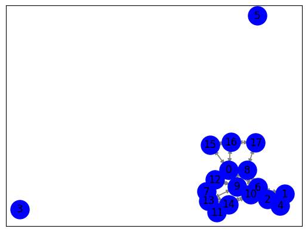

Closeness centrality#
Langkah 1: Crawl data judul berita dan isi berita dari Bola.net#
import requests
import pandas as pd
from bs4 import BeautifulSoup
from datetime import datetime, timedelta
# URL yang akan di-crawl
base_url = "https://indeks.kompas.com/?site=bola&date="
start_date = "2023-10-01"
end_date = "2023-10-30"
# Membuat list untuk menyimpan data
data = []
# Fungsi untuk mengambil data berita dari halaman web
def crawl_kompas_news(url):
response = requests.get(url)
soup = BeautifulSoup(response.text, "html.parser")
# Cari semua elemen dengan kelas 'article__list__title'
news_elements = soup.find_all("div", class_="article__list__title")
for element in news_elements:
# Dapatkan judul dan tautan berita
title = element.h3.a.text
link = element.h3.a["href"]
# Crawl isi berita dari tautan judul
article_text = crawl_kompas_article(link)
# Tambahkan data ke list
data.append({"Judul": title, "Isi Berita": article_text})
# Fungsi untuk mengambil isi berita dari tautan judul berita
def crawl_kompas_article(article_url):
response = requests.get(article_url)
soup = BeautifulSoup(response.text, "html.parser")
# Cari elemen dengan kelas 'read__content'
content_element = soup.find("div", class_="read__content")
# Dapatkan isi berita
article_text = content_element.get_text()
return article_text
# Loop untuk tanggal dari start_date hingga end_date
current_date = datetime.strptime(start_date, "%Y-%m-%d") # Konversi tanggal awal ke objek datetime
end_date = datetime.strptime(end_date, "%Y-%m-%d") # Konversi tanggal akhir ke objek datetime
while current_date <= end_date:
current_url = f"{base_url}{current_date.strftime('%Y-%m-%d')}" # Menggunakan strftime untuk format tanggal
print(f"Mengambil berita untuk tanggal {current_date.strftime('%Y-%m-%d')}")
crawl_kompas_news(current_url)
# Lanjut ke tanggal berikutnya
current_date += timedelta(days=1)
Mengambil berita untuk tanggal 2023-10-01
Mengambil berita untuk tanggal 2023-10-02
---------------------------------------------------------------------------
KeyboardInterrupt Traceback (most recent call last)
<ipython-input-1-20587ddaa54a> in <cell line: 50>()
51 current_url = f"{base_url}{current_date.strftime('%Y-%m-%d')}" # Menggunakan strftime untuk format tanggal
52 print(f"Mengambil berita untuk tanggal {current_date.strftime('%Y-%m-%d')}")
---> 53 crawl_kompas_news(current_url)
54
55 # Lanjut ke tanggal berikutnya
<ipython-input-1-20587ddaa54a> in crawl_kompas_news(url)
26
27 # Crawl isi berita dari tautan judul
---> 28 article_text = crawl_kompas_article(link)
29
30 # Tambahkan data ke list
<ipython-input-1-20587ddaa54a> in crawl_kompas_article(article_url)
33 # Fungsi untuk mengambil isi berita dari tautan judul berita
34 def crawl_kompas_article(article_url):
---> 35 response = requests.get(article_url)
36 soup = BeautifulSoup(response.text, "html.parser")
37
/usr/local/lib/python3.10/dist-packages/requests/api.py in get(url, params, **kwargs)
71 """
72
---> 73 return request("get", url, params=params, **kwargs)
74
75
/usr/local/lib/python3.10/dist-packages/requests/api.py in request(method, url, **kwargs)
57 # cases, and look like a memory leak in others.
58 with sessions.Session() as session:
---> 59 return session.request(method=method, url=url, **kwargs)
60
61
/usr/local/lib/python3.10/dist-packages/requests/sessions.py in request(self, method, url, params, data, headers, cookies, files, auth, timeout, allow_redirects, proxies, hooks, stream, verify, cert, json)
587 }
588 send_kwargs.update(settings)
--> 589 resp = self.send(prep, **send_kwargs)
590
591 return resp
/usr/local/lib/python3.10/dist-packages/requests/sessions.py in send(self, request, **kwargs)
701
702 # Send the request
--> 703 r = adapter.send(request, **kwargs)
704
705 # Total elapsed time of the request (approximately)
/usr/local/lib/python3.10/dist-packages/requests/adapters.py in send(self, request, stream, timeout, verify, cert, proxies)
484
485 try:
--> 486 resp = conn.urlopen(
487 method=request.method,
488 url=url,
/usr/local/lib/python3.10/dist-packages/urllib3/connectionpool.py in urlopen(self, method, url, body, headers, retries, redirect, assert_same_host, timeout, pool_timeout, release_conn, chunked, body_pos, preload_content, decode_content, **response_kw)
789
790 # Make the request on the HTTPConnection object
--> 791 response = self._make_request(
792 conn,
793 method,
/usr/local/lib/python3.10/dist-packages/urllib3/connectionpool.py in _make_request(self, conn, method, url, body, headers, retries, timeout, chunked, response_conn, preload_content, decode_content, enforce_content_length)
535 # Receive the response from the server
536 try:
--> 537 response = conn.getresponse()
538 except (BaseSSLError, OSError) as e:
539 self._raise_timeout(err=e, url=url, timeout_value=read_timeout)
/usr/local/lib/python3.10/dist-packages/urllib3/connection.py in getresponse(self)
459
460 # Get the response from http.client.HTTPConnection
--> 461 httplib_response = super().getresponse()
462
463 try:
/usr/lib/python3.10/http/client.py in getresponse(self)
1373 try:
1374 try:
-> 1375 response.begin()
1376 except ConnectionError:
1377 self.close()
/usr/lib/python3.10/http/client.py in begin(self)
316 # read until we get a non-100 response
317 while True:
--> 318 version, status, reason = self._read_status()
319 if status != CONTINUE:
320 break
/usr/lib/python3.10/http/client.py in _read_status(self)
277
278 def _read_status(self):
--> 279 line = str(self.fp.readline(_MAXLINE + 1), "iso-8859-1")
280 if len(line) > _MAXLINE:
281 raise LineTooLong("status line")
/usr/lib/python3.10/socket.py in readinto(self, b)
703 while True:
704 try:
--> 705 return self._sock.recv_into(b)
706 except timeout:
707 self._timeout_occurred = True
/usr/lib/python3.10/ssl.py in recv_into(self, buffer, nbytes, flags)
1272 "non-zero flags not allowed in calls to recv_into() on %s" %
1273 self.__class__)
-> 1274 return self.read(nbytes, buffer)
1275 else:
1276 return super().recv_into(buffer, nbytes, flags)
/usr/lib/python3.10/ssl.py in read(self, len, buffer)
1128 try:
1129 if buffer is not None:
-> 1130 return self._sslobj.read(len, buffer)
1131 else:
1132 return self._sslobj.read(len)
KeyboardInterrupt:
# Membuat dataframe pandas dari data
df = pd.DataFrame(data)
# Menyimpan dataframe ke dalam file CSV
df.to_csv("berita_kompas.csv", index=False)
df
| Judul | Isi Berita | |
|---|---|---|
| 0 | Persib Vs Persita, Bojan Hodak Tak Sangka Maun... | \n\nBANDUNG, KOMPAS.com - Persib Bandung melib... |
| 1 | Liga Indonesia Diwarnai Pemain Kolaps, APPI In... | \n\nKOMPAS.com – Asosiasi Pesepak Bola Profesi... |
| 2 | Link Live Streaming Atalanta Vs Juventus, Kick... | \n\nKOMPAS.com – Juventus bakal bertandang ke ... |
| 3 | Klasemen Liga 1: Persib Melesat ke 3 Besar, Bo... | \n\nKOMPAS.com – Klasemen Liga 1 menempatkan P... |
| 4 | Hasil Persib Vs Persita 5-0: David Da Silva Ha... | \n\nKOMPAS.com - Hattrick David Da Silva memba... |
| ... | ... | ... |
| 445 | Man United Digilas Man City di Old Trafford, K... | \n\nKOMPAS.com - Man United kalah telak 0-3 da... |
| 446 | Link Live Streaming Ballon d'Or 2023, Malam Ini | \n\nKOMPAS.com - Malam penganugerahan Ballon d... |
| 447 | Lihat Inter Menang lalu Milan Ditahan Napoli, ... | \n\nKOMPAS.com - Olivier Giroud murka dengan h... |
| 448 | Ballon d'Or 2023: Messi dan Haaland Layak Mena... | \n\nKOMPAS.com - Pep Guardiola menyebut Lionel... |
| 449 | Hasil RANS Vs PSM: Kenzo Nambu Selamatkan Juku... | \n\nKOMPAS.com - RANS Nusantara harus berbagi ... |
450 rows × 2 columns
df.to_csv("berita_bola.csv", index=False)
Langkah 2: Ekstraksi Kalimat (NLTK)#
import pandas as pd
from google.colab import drive
drive.mount('/content/drive')
Mounted at /content/drive
df = pd.read_csv("/content/drive/MyDrive/ppw/tugas/tugas-ppw/berita_bola.csv")
df
| Judul | Isi Berita | |
|---|---|---|
| 0 | Persib Vs Persita, Bojan Hodak Tak Sangka Maun... | \n\nBANDUNG, KOMPAS.com - Persib Bandung melib... |
| 1 | Liga Indonesia Diwarnai Pemain Kolaps, APPI In... | \n\nKOMPAS.com – Asosiasi Pesepak Bola Profesi... |
| 2 | Link Live Streaming Atalanta Vs Juventus, Kick... | \n\nKOMPAS.com – Juventus bakal bertandang ke ... |
| 3 | Klasemen Liga 1: Persib Melesat ke 3 Besar, Bo... | \n\nKOMPAS.com – Klasemen Liga 1 menempatkan P... |
| 4 | Hasil Persib Vs Persita 5-0: David Da Silva Ha... | \n\nKOMPAS.com - Hattrick David Da Silva memba... |
| ... | ... | ... |
| 445 | Man United Digilas Man City di Old Trafford, K... | \n\nKOMPAS.com - Man United kalah telak 0-3 da... |
| 446 | Link Live Streaming Ballon d'Or 2023, Malam Ini | \n\nKOMPAS.com - Malam penganugerahan Ballon d... |
| 447 | Lihat Inter Menang lalu Milan Ditahan Napoli, ... | \n\nKOMPAS.com - Olivier Giroud murka dengan h... |
| 448 | Ballon d'Or 2023: Messi dan Haaland Layak Mena... | \n\nKOMPAS.com - Pep Guardiola menyebut Lionel... |
| 449 | Hasil RANS Vs PSM: Kenzo Nambu Selamatkan Juku... | \n\nKOMPAS.com - RANS Nusantara harus berbagi ... |
450 rows × 2 columns
berita = df['Isi Berita'].iloc[1]
print(berita)
KOMPAS.com – Asosiasi Pesepak Bola Profesional Indonesia (APPI) merilis pernyataan mengenai insiden di Liga 1 dan Liga 2 yang menyebabkan pemain kolaps saat pertandingan.
Terbaru, bek Dewa United, Ady Setiawan, tumbang di lapangan seusai bersinggungan dengan pemain Persebaya, Arief Catur Pemungkas.
Saat itu, Arief Catur melakukan pelanggaran keras terhadap Ady Setiawan. Ia kedapatan menyikut kepala belakang Adi Setiawan.
Aksi tak sportif Catur membuat Ady tumbang. Ady pun sempat mendapatkan penanganan medis, sebelum dibawa menggunakan ambulans.
Baca juga: Dewa United Vs Persebaya: Ady Setiawan Kolaps, Arief Catur Jenguk ke RS dan Minta Maaf
APPI buka suara mengenai insiden yang membuat pesepak bola Liga 1 dan Liga 2 mengalami kolaps di lapangan.
"Hal-hal yang berpotensi menimbulkan insiden yang tidak diharapkan dapat dicegah dengan sedemikian rupa," tulis pernyataan resmi APPI.
"Sportivitas antar pesepak bola, ketegasan penyelenggara serta perangkat laga, dan kecekatan tim medis di lapangan harus diutamakan," lanjut keterangan itu.
Sementara itu, Kepala Divisi Medis dan Kesehatan APPI, dr Donny Kurniawan, mengatakan diperlukan pemahaman yang tepat untuk membantu pesepak bola saat kolaps di lapangan.
Baca juga: Hasil Dewa United Vs Persebaya 1-1: Ady Setiawan Tumbang Disikut Arief Catur, Laga Imbang
"Siapa pun yang berada di lapangan pasti ingin menolong korban saat terjadi kecelakaan di lapangan sepak bola dengan cepat," kata Donny.
"Namun, yang diperlukan bukan hanya kecepatan, tetapi ketepatan dalam menolong juga menjadi hal penting," lanjut dia.
Oleh sebab itu, APPI mengingatkan agar tindakan-tindakan yang dirasa dapat menyebabkan bahaya untuk dihindari para pesepak bola Indonesia.
"Sekali pun adanya intensitas tinggi dalam laga bukan berarti dibenarkan untuk melakukan tindakan-tindakan yang tak diperlukan," tulis APPI.
Baca juga: Alasan Josep Gombau Tak Mau Gegabah Evaluasi Pemain Asing Persebaya
"Terlebih lagi, sikap-sikap yang sangat tidak dapat dibenarkan dan mencederai profesionalisme," lanjutnya.
Dapatkan update berita pilihan dan breaking news setiap hari dari Kompas.com. Mari bergabung di Grup Telegram "Kompas.com News Update", caranya klik link https://t.me/kompascomupdate, kemudian join. Anda harus install aplikasi Telegram terlebih dulu di ponsel.
#install library
!pip install sastrawi
!pip install swifter
!pip install gensim
Collecting sastrawi
Downloading Sastrawi-1.0.1-py2.py3-none-any.whl (209 kB)
?25l ━━━━━━━━━━━━━━━━━━━━━━━━━━━━━━━━━━━━━━━━ 0.0/209.7 kB ? eta -:--:--
━━━━━━━━━━━━━━━━━╸━━━━━━━━━━━━━━━━━━━━━━ 92.2/209.7 kB 2.7 MB/s eta 0:00:01
━━━━━━━━━━━━━━━━━━━━━━━━━━━━━━━━━━━━━━━━ 209.7/209.7 kB 4.1 MB/s eta 0:00:00
?25hInstalling collected packages: sastrawi
Successfully installed sastrawi-1.0.1
Collecting swifter
Downloading swifter-1.4.0.tar.gz (1.2 MB)
━━━━━━━━━━━━━━━━━━━━━━━━━━━━━━━━━━━━━━━━ 1.2/1.2 MB 14.4 MB/s eta 0:00:00
?25h Preparing metadata (setup.py) ... ?25l?25hdone
Requirement already satisfied: pandas>=1.0.0 in /usr/local/lib/python3.10/dist-packages (from swifter) (1.5.3)
Requirement already satisfied: psutil>=5.6.6 in /usr/local/lib/python3.10/dist-packages (from swifter) (5.9.5)
Requirement already satisfied: dask[dataframe]>=2.10.0 in /usr/local/lib/python3.10/dist-packages (from swifter) (2023.8.1)
Requirement already satisfied: tqdm>=4.33.0 in /usr/local/lib/python3.10/dist-packages (from swifter) (4.66.1)
Requirement already satisfied: click>=8.0 in /usr/local/lib/python3.10/dist-packages (from dask[dataframe]>=2.10.0->swifter) (8.1.7)
Requirement already satisfied: cloudpickle>=1.5.0 in /usr/local/lib/python3.10/dist-packages (from dask[dataframe]>=2.10.0->swifter) (2.2.1)
Requirement already satisfied: fsspec>=2021.09.0 in /usr/local/lib/python3.10/dist-packages (from dask[dataframe]>=2.10.0->swifter) (2023.6.0)
Requirement already satisfied: packaging>=20.0 in /usr/local/lib/python3.10/dist-packages (from dask[dataframe]>=2.10.0->swifter) (23.2)
Requirement already satisfied: partd>=1.2.0 in /usr/local/lib/python3.10/dist-packages (from dask[dataframe]>=2.10.0->swifter) (1.4.1)
Requirement already satisfied: pyyaml>=5.3.1 in /usr/local/lib/python3.10/dist-packages (from dask[dataframe]>=2.10.0->swifter) (6.0.1)
Requirement already satisfied: toolz>=0.10.0 in /usr/local/lib/python3.10/dist-packages (from dask[dataframe]>=2.10.0->swifter) (0.12.0)
Requirement already satisfied: importlib-metadata>=4.13.0 in /usr/local/lib/python3.10/dist-packages (from dask[dataframe]>=2.10.0->swifter) (6.8.0)
Requirement already satisfied: python-dateutil>=2.8.1 in /usr/local/lib/python3.10/dist-packages (from pandas>=1.0.0->swifter) (2.8.2)
Requirement already satisfied: pytz>=2020.1 in /usr/local/lib/python3.10/dist-packages (from pandas>=1.0.0->swifter) (2023.3.post1)
Requirement already satisfied: numpy>=1.21.0 in /usr/local/lib/python3.10/dist-packages (from pandas>=1.0.0->swifter) (1.23.5)
Requirement already satisfied: zipp>=0.5 in /usr/local/lib/python3.10/dist-packages (from importlib-metadata>=4.13.0->dask[dataframe]>=2.10.0->swifter) (3.17.0)
Requirement already satisfied: locket in /usr/local/lib/python3.10/dist-packages (from partd>=1.2.0->dask[dataframe]>=2.10.0->swifter) (1.0.0)
Requirement already satisfied: six>=1.5 in /usr/local/lib/python3.10/dist-packages (from python-dateutil>=2.8.1->pandas>=1.0.0->swifter) (1.16.0)
Building wheels for collected packages: swifter
Building wheel for swifter (setup.py) ... ?25l?25hdone
Created wheel for swifter: filename=swifter-1.4.0-py3-none-any.whl size=16507 sha256=7c49feebb14364f452abc588cd0dfa7d81afdf348ccee0bccde70853717aea0b
Stored in directory: /root/.cache/pip/wheels/e4/cf/51/0904952972ee2c7aa3709437065278dc534ec1b8d2ad41b443
Successfully built swifter
Installing collected packages: swifter
Successfully installed swifter-1.4.0
Requirement already satisfied: gensim in /usr/local/lib/python3.10/dist-packages (4.3.2)
Requirement already satisfied: numpy>=1.18.5 in /usr/local/lib/python3.10/dist-packages (from gensim) (1.23.5)
Requirement already satisfied: scipy>=1.7.0 in /usr/local/lib/python3.10/dist-packages (from gensim) (1.11.3)
Requirement already satisfied: smart-open>=1.8.1 in /usr/local/lib/python3.10/dist-packages (from gensim) (6.4.0)
import numpy as np
from nltk.corpus import stopwords
import re
import nltk
nltk.download('stopwords')
nltk.download('wordnet')
nltk.download('punkt')
from Sastrawi.Stemmer.StemmerFactory import StemmerFactory
from nltk.tokenize import sent_tokenize, word_tokenize
from sklearn.feature_extraction.text import TfidfVectorizer
[nltk_data] Downloading package stopwords to /root/nltk_data...
[nltk_data] Unzipping corpora/stopwords.zip.
[nltk_data] Downloading package wordnet to /root/nltk_data...
[nltk_data] Downloading package punkt to /root/nltk_data...
[nltk_data] Unzipping tokenizers/punkt.zip.
Langkah 3: TF IDF#
kalimat = nltk.sent_tokenize(berita)
tfidf_vectorizer = TfidfVectorizer()
tfidf_matrix = tfidf_vectorizer.fit_transform(kalimat)
terms = tfidf_vectorizer.get_feature_names_out()
for i, sentence in enumerate(kalimat):
print(f"\nKalimat {i+1}: {sentence}")
for j, term in enumerate(terms):
tfidf_value = tfidf_matrix[i, j]
if tfidf_value > 0:
print(f"{term}: {tfidf_value:.4f}")
Kalimat 1:
KOMPAS.com – Asosiasi Pesepak Bola Profesional Indonesia (APPI) merilis pernyataan mengenai insiden di Liga 1 dan Liga 2 yang menyebabkan pemain kolaps saat pertandingan.
appi: 0.1544
asosiasi: 0.2511
bola: 0.1544
com: 0.1976
dan: 0.1544
di: 0.1350
indonesia: 0.2198
insiden: 0.1976
kolaps: 0.1976
kompas: 0.1976
liga: 0.4396
mengenai: 0.2198
menyebabkan: 0.2198
merilis: 0.2511
pemain: 0.1976
pernyataan: 0.2198
pertandingan: 0.2511
pesepak: 0.1663
profesional: 0.2511
saat: 0.1804
yang: 0.1268
Kalimat 2: Terbaru, bek Dewa United, Ady Setiawan, tumbang di lapangan seusai bersinggungan dengan pemain Persebaya, Arief Catur Pemungkas.
ady: 0.1844
arief: 0.2155
bek: 0.3000
bersinggungan: 0.3000
catur: 0.1987
dengan: 0.2361
dewa: 0.2361
di: 0.1612
lapangan: 0.1987
pemain: 0.2361
pemungkas: 0.3000
persebaya: 0.2155
setiawan: 0.1987
seusai: 0.3000
terbaru: 0.3000
tumbang: 0.2361
united: 0.2361
Kalimat 3: Saat itu, Arief Catur melakukan pelanggaran keras terhadap Ady Setiawan.
ady: 0.2398
arief: 0.2802
catur: 0.2583
itu: 0.2802
keras: 0.3902
melakukan: 0.3415
pelanggaran: 0.3902
saat: 0.2802
setiawan: 0.2583
terhadap: 0.3902
Kalimat 4: Ia kedapatan menyikut kepala belakang Adi Setiawan.
adi: 0.4015
belakang: 0.4015
ia: 0.4015
kedapatan: 0.4015
kepala: 0.3514
menyikut: 0.4015
setiawan: 0.2658
Kalimat 5: Aksi tak sportif Catur membuat Ady tumbang.
ady: 0.2800
aksi: 0.4555
catur: 0.3016
membuat: 0.3987
sportif: 0.4555
tak: 0.3584
tumbang: 0.3584
Kalimat 6: Ady pun sempat mendapatkan penanganan medis, sebelum dibawa menggunakan ambulans.
ady: 0.2094
ambulans: 0.3407
dibawa: 0.3407
medis: 0.2681
mendapatkan: 0.3407
menggunakan: 0.3407
penanganan: 0.3407
pun: 0.2681
sebelum: 0.3407
sempat: 0.3407
Kalimat 7: Baca juga: Dewa United Vs Persebaya: Ady Setiawan Kolaps, Arief Catur Jenguk ke RS dan Minta Maaf
APPI buka suara mengenai insiden yang membuat pesepak bola Liga 1 dan Liga 2 mengalami kolaps di lapangan.
ady: 0.1234
appi: 0.1234
arief: 0.1442
baca: 0.1580
bola: 0.1234
buka: 0.2008
catur: 0.1329
dan: 0.2468
dewa: 0.1580
di: 0.1079
insiden: 0.1580
jenguk: 0.2008
juga: 0.1442
ke: 0.2008
kolaps: 0.3160
lapangan: 0.1329
liga: 0.3515
maaf: 0.2008
membuat: 0.1757
mengalami: 0.2008
mengenai: 0.1757
minta: 0.2008
persebaya: 0.1442
pesepak: 0.1329
rs: 0.2008
setiawan: 0.1329
suara: 0.2008
united: 0.1580
vs: 0.1757
yang: 0.1014
Kalimat 8: "Hal-hal yang berpotensi menimbulkan insiden yang tidak diharapkan dapat dicegah dengan sedemikian rupa," tulis pernyataan resmi APPI.
appi: 0.1555
berpotensi: 0.2530
dapat: 0.1991
dengan: 0.1991
dicegah: 0.2530
diharapkan: 0.2530
hal: 0.4430
insiden: 0.1991
menimbulkan: 0.2530
pernyataan: 0.2215
resmi: 0.2530
rupa: 0.2530
sedemikian: 0.2530
tidak: 0.2215
tulis: 0.2215
yang: 0.2556
Kalimat 9: "Sportivitas antar pesepak bola, ketegasan penyelenggara serta perangkat laga, dan kecekatan tim medis di lapangan harus diutamakan," lanjut keterangan itu.
antar: 0.2564
bola: 0.1576
dan: 0.1576
di: 0.1378
diutamakan: 0.2564
harus: 0.2245
itu: 0.1842
kecekatan: 0.2564
ketegasan: 0.2564
keterangan: 0.2564
laga: 0.2018
lanjut: 0.2245
lapangan: 0.1698
medis: 0.2018
penyelenggara: 0.2564
perangkat: 0.2564
pesepak: 0.1698
serta: 0.2564
sportivitas: 0.2564
tim: 0.2564
Kalimat 10: Sementara itu, Kepala Divisi Medis dan Kesehatan APPI, dr Donny Kurniawan, mengatakan diperlukan pemahaman yang tepat untuk membantu pesepak bola saat kolaps di lapangan.
appi: 0.1509
bola: 0.1509
dan: 0.1509
di: 0.1319
diperlukan: 0.1931
divisi: 0.2455
donny: 0.2149
dr: 0.2455
itu: 0.1763
kepala: 0.2149
kesehatan: 0.2455
kolaps: 0.1931
kurniawan: 0.2455
lapangan: 0.1625
medis: 0.1931
membantu: 0.2455
mengatakan: 0.2455
pemahaman: 0.2455
pesepak: 0.1625
saat: 0.1763
sementara: 0.2455
tepat: 0.2455
untuk: 0.1931
yang: 0.1240
Kalimat 11: Baca juga: Hasil Dewa United Vs Persebaya 1-1: Ady Setiawan Tumbang Disikut Arief Catur, Laga Imbang
"Siapa pun yang berada di lapangan pasti ingin menolong korban saat terjadi kecelakaan di lapangan sepak bola dengan cepat," kata Donny.
ady: 0.1194
arief: 0.1395
baca: 0.1529
berada: 0.1943
bola: 0.1194
catur: 0.1286
cepat: 0.1943
dengan: 0.1529
dewa: 0.1529
di: 0.2088
disikut: 0.1943
donny: 0.1701
hasil: 0.1943
imbang: 0.1943
ingin: 0.1943
juga: 0.1395
kata: 0.1943
kecelakaan: 0.1943
korban: 0.1943
laga: 0.1529
lapangan: 0.2573
menolong: 0.1701
pasti: 0.1943
persebaya: 0.1395
pun: 0.1529
saat: 0.1395
sepak: 0.1943
setiawan: 0.1286
siapa: 0.1943
terjadi: 0.1943
tumbang: 0.1529
united: 0.1529
vs: 0.1701
yang: 0.0981
Kalimat 12: "Namun, yang diperlukan bukan hanya kecepatan, tetapi ketepatan dalam menolong juga menjadi hal penting," lanjut dia.
bukan: 0.2407
dalam: 0.2407
dia: 0.2750
diperlukan: 0.2164
hal: 0.2407
hanya: 0.2750
juga: 0.1975
kecepatan: 0.2750
ketepatan: 0.2750
lanjut: 0.2407
menjadi: 0.2750
menolong: 0.2407
namun: 0.2750
penting: 0.2750
tetapi: 0.2750
yang: 0.1389
Kalimat 13: Oleh sebab itu, APPI mengingatkan agar tindakan-tindakan yang dirasa dapat menyebabkan bahaya untuk dihindari para pesepak bola Indonesia.
agar: 0.2516
appi: 0.1546
bahaya: 0.2516
bola: 0.1546
dapat: 0.1979
dihindari: 0.2516
dirasa: 0.2516
indonesia: 0.2202
itu: 0.1807
mengingatkan: 0.2516
menyebabkan: 0.2202
oleh: 0.2516
para: 0.2516
pesepak: 0.1666
sebab: 0.2516
tindakan: 0.4404
untuk: 0.1979
yang: 0.1270
Kalimat 14: "Sekali pun adanya intensitas tinggi dalam laga bukan berarti dibenarkan untuk melakukan tindakan-tindakan yang tak diperlukan," tulis APPI.
adanya: 0.2530
appi: 0.1555
berarti: 0.2530
bukan: 0.2214
dalam: 0.2214
dibenarkan: 0.2214
diperlukan: 0.1991
intensitas: 0.2530
laga: 0.1991
melakukan: 0.2214
pun: 0.1991
sekali: 0.2530
tak: 0.1991
tindakan: 0.4429
tinggi: 0.2530
tulis: 0.2214
untuk: 0.1991
yang: 0.1278
Kalimat 15: Baca juga: Alasan Josep Gombau Tak Mau Gegabah Evaluasi Pemain Asing Persebaya
"Terlebih lagi, sikap-sikap yang sangat tidak dapat dibenarkan dan mencederai profesionalisme," lanjutnya.
alasan: 0.2111
asing: 0.2111
baca: 0.1661
dan: 0.1298
dapat: 0.1661
dibenarkan: 0.1848
evaluasi: 0.2111
gegabah: 0.2111
gombau: 0.2111
josep: 0.2111
juga: 0.1516
lagi: 0.2111
lanjutnya: 0.2111
mau: 0.2111
mencederai: 0.2111
pemain: 0.1661
persebaya: 0.1516
profesionalisme: 0.2111
sangat: 0.2111
sikap: 0.4222
tak: 0.1661
terlebih: 0.1848
tidak: 0.1848
yang: 0.1066
Kalimat 16: Dapatkan update berita pilihan dan breaking news setiap hari dari Kompas.com.
berita: 0.3139
breaking: 0.3139
com: 0.2470
dan: 0.1930
dapatkan: 0.3139
dari: 0.3139
hari: 0.3139
kompas: 0.2470
news: 0.2748
pilihan: 0.3139
setiap: 0.3139
update: 0.2748
Kalimat 17: Mari bergabung di Grup Telegram "Kompas.com News Update", caranya klik link https://t.me/kompascomupdate, kemudian join.
bergabung: 0.2597
caranya: 0.2597
com: 0.2043
di: 0.1396
grup: 0.2597
https: 0.2597
join: 0.2597
kemudian: 0.2597
klik: 0.2597
kompas: 0.2043
kompascomupdate: 0.2597
link: 0.2597
mari: 0.2597
me: 0.2597
news: 0.2273
telegram: 0.2273
update: 0.2273
Kalimat 18: Anda harus install aplikasi Telegram terlebih dulu di ponsel.
anda: 0.3630
aplikasi: 0.3630
di: 0.1951
dulu: 0.3630
harus: 0.3178
install: 0.3630
ponsel: 0.3630
telegram: 0.3178
terlebih: 0.3178
Cosine Similarity#
from sklearn.metrics.pairwise import cosine_similarity
import networkx as nx
import matplotlib.pyplot as plt
cosine_similarities = cosine_similarity(tfidf_matrix, tfidf_matrix)
for i in range(len(kalimat)):
for j in range(i+1, len(kalimat)):
similarity = cosine_similarities[i][j]
print(f"Similarity Kalimat {i+1} dan Kalimat {j+1}: {similarity:.4f}")
Similarity Kalimat 1 dan Kalimat 2: 0.0684
Similarity Kalimat 1 dan Kalimat 3: 0.0505
Similarity Kalimat 1 dan Kalimat 4: 0.0000
Similarity Kalimat 1 dan Kalimat 5: 0.0000
Similarity Kalimat 1 dan Kalimat 6: 0.0000
Similarity Kalimat 1 dan Kalimat 7: 0.4125
Similarity Kalimat 1 dan Kalimat 8: 0.1444
Similarity Kalimat 1 dan Kalimat 9: 0.0955
Similarity Kalimat 1 dan Kalimat 10: 0.2004
Similarity Kalimat 1 dan Kalimat 11: 0.0842
Similarity Kalimat 1 dan Kalimat 12: 0.0176
Similarity Kalimat 1 dan Kalimat 13: 0.1884
Similarity Kalimat 1 dan Kalimat 14: 0.0402
Similarity Kalimat 1 dan Kalimat 15: 0.0664
Similarity Kalimat 1 dan Kalimat 16: 0.1274
Similarity Kalimat 1 dan Kalimat 17: 0.0996
Similarity Kalimat 1 dan Kalimat 18: 0.0263
Similarity Kalimat 2 dan Kalimat 3: 0.2073
Similarity Kalimat 2 dan Kalimat 4: 0.0528
Similarity Kalimat 2 dan Kalimat 5: 0.1961
Similarity Kalimat 2 dan Kalimat 6: 0.0386
Similarity Kalimat 2 dan Kalimat 7: 0.2561
Similarity Kalimat 2 dan Kalimat 8: 0.0470
Similarity Kalimat 2 dan Kalimat 9: 0.0559
Similarity Kalimat 2 dan Kalimat 10: 0.0536
Similarity Kalimat 2 dan Kalimat 11: 0.3624
Similarity Kalimat 2 dan Kalimat 12: 0.0000
Similarity Kalimat 2 dan Kalimat 13: 0.0000
Similarity Kalimat 2 dan Kalimat 14: 0.0000
Similarity Kalimat 2 dan Kalimat 15: 0.0719
Similarity Kalimat 2 dan Kalimat 16: 0.0000
Similarity Kalimat 2 dan Kalimat 17: 0.0225
Similarity Kalimat 2 dan Kalimat 18: 0.0315
Similarity Kalimat 3 dan Kalimat 4: 0.0687
Similarity Kalimat 3 dan Kalimat 5: 0.1451
Similarity Kalimat 3 dan Kalimat 6: 0.0502
Similarity Kalimat 3 dan Kalimat 7: 0.1387
Similarity Kalimat 3 dan Kalimat 8: 0.0000
Similarity Kalimat 3 dan Kalimat 9: 0.0516
Similarity Kalimat 3 dan Kalimat 10: 0.0988
Similarity Kalimat 3 dan Kalimat 11: 0.1733
Similarity Kalimat 3 dan Kalimat 12: 0.0000
Similarity Kalimat 3 dan Kalimat 13: 0.0506
Similarity Kalimat 3 dan Kalimat 14: 0.0756
Similarity Kalimat 3 dan Kalimat 15: 0.0000
Similarity Kalimat 3 dan Kalimat 16: 0.0000
Similarity Kalimat 3 dan Kalimat 17: 0.0000
Similarity Kalimat 3 dan Kalimat 18: 0.0000
Similarity Kalimat 4 dan Kalimat 5: 0.0000
Similarity Kalimat 4 dan Kalimat 6: 0.0000
Similarity Kalimat 4 dan Kalimat 7: 0.0353
Similarity Kalimat 4 dan Kalimat 8: 0.0000
Similarity Kalimat 4 dan Kalimat 9: 0.0000
Similarity Kalimat 4 dan Kalimat 10: 0.0755
Similarity Kalimat 4 dan Kalimat 11: 0.0342
Similarity Kalimat 4 dan Kalimat 12: 0.0000
Similarity Kalimat 4 dan Kalimat 13: 0.0000
Similarity Kalimat 4 dan Kalimat 14: 0.0000
Similarity Kalimat 4 dan Kalimat 15: 0.0000
Similarity Kalimat 4 dan Kalimat 16: 0.0000
Similarity Kalimat 4 dan Kalimat 17: 0.0000
Similarity Kalimat 4 dan Kalimat 18: 0.0000
Similarity Kalimat 5 dan Kalimat 6: 0.0586
Similarity Kalimat 5 dan Kalimat 7: 0.1447
Similarity Kalimat 5 dan Kalimat 8: 0.0000
Similarity Kalimat 5 dan Kalimat 9: 0.0000
Similarity Kalimat 5 dan Kalimat 10: 0.0000
Similarity Kalimat 5 dan Kalimat 11: 0.1270
Similarity Kalimat 5 dan Kalimat 12: 0.0000
Similarity Kalimat 5 dan Kalimat 13: 0.0000
Similarity Kalimat 5 dan Kalimat 14: 0.0713
Similarity Kalimat 5 dan Kalimat 15: 0.0595
Similarity Kalimat 5 dan Kalimat 16: 0.0000
Similarity Kalimat 5 dan Kalimat 17: 0.0000
Similarity Kalimat 5 dan Kalimat 18: 0.0000
Similarity Kalimat 6 dan Kalimat 7: 0.0258
Similarity Kalimat 6 dan Kalimat 8: 0.0000
Similarity Kalimat 6 dan Kalimat 9: 0.0541
Similarity Kalimat 6 dan Kalimat 10: 0.0518
Similarity Kalimat 6 dan Kalimat 11: 0.0660
Similarity Kalimat 6 dan Kalimat 12: 0.0000
Similarity Kalimat 6 dan Kalimat 13: 0.0000
Similarity Kalimat 6 dan Kalimat 14: 0.0534
Similarity Kalimat 6 dan Kalimat 15: 0.0000
Similarity Kalimat 6 dan Kalimat 16: 0.0000
Similarity Kalimat 6 dan Kalimat 17: 0.0000
Similarity Kalimat 6 dan Kalimat 18: 0.0000
Similarity Kalimat 7 dan Kalimat 8: 0.0766
Similarity Kalimat 7 dan Kalimat 9: 0.1184
Similarity Kalimat 7 dan Kalimat 10: 0.2055
Similarity Kalimat 7 dan Kalimat 11: 0.2931
Similarity Kalimat 7 dan Kalimat 12: 0.0426
Similarity Kalimat 7 dan Kalimat 13: 0.0732
Similarity Kalimat 7 dan Kalimat 14: 0.0321
Similarity Kalimat 7 dan Kalimat 15: 0.1128
Similarity Kalimat 7 dan Kalimat 16: 0.0476
Similarity Kalimat 7 dan Kalimat 17: 0.0151
Similarity Kalimat 7 dan Kalimat 18: 0.0211
Similarity Kalimat 8 dan Kalimat 9: 0.0000
Similarity Kalimat 8 dan Kalimat 10: 0.0552
Similarity Kalimat 8 dan Kalimat 11: 0.0555
Similarity Kalimat 8 dan Kalimat 12: 0.1421
Similarity Kalimat 8 dan Kalimat 13: 0.0959
Similarity Kalimat 8 dan Kalimat 14: 0.1059
Similarity Kalimat 8 dan Kalimat 15: 0.1012
Similarity Kalimat 8 dan Kalimat 16: 0.0000
Similarity Kalimat 8 dan Kalimat 17: 0.0000
Similarity Kalimat 8 dan Kalimat 18: 0.0000
Similarity Kalimat 9 dan Kalimat 10: 0.1924
Similarity Kalimat 9 dan Kalimat 11: 0.1221
Similarity Kalimat 9 dan Kalimat 12: 0.0540
Similarity Kalimat 9 dan Kalimat 13: 0.0859
Similarity Kalimat 9 dan Kalimat 14: 0.0402
Similarity Kalimat 9 dan Kalimat 15: 0.0205
Similarity Kalimat 9 dan Kalimat 16: 0.0304
Similarity Kalimat 9 dan Kalimat 17: 0.0192
Similarity Kalimat 9 dan Kalimat 18: 0.0982
Similarity Kalimat 10 dan Kalimat 11: 0.1607
Similarity Kalimat 10 dan Kalimat 12: 0.0590
Similarity Kalimat 10 dan Kalimat 13: 0.1596
Similarity Kalimat 10 dan Kalimat 14: 0.1162
Similarity Kalimat 10 dan Kalimat 15: 0.0328
Similarity Kalimat 10 dan Kalimat 16: 0.0291
Similarity Kalimat 10 dan Kalimat 17: 0.0184
Similarity Kalimat 10 dan Kalimat 18: 0.0257
Similarity Kalimat 11 dan Kalimat 12: 0.0821
Similarity Kalimat 11 dan Kalimat 13: 0.0309
Similarity Kalimat 11 dan Kalimat 14: 0.0734
Similarity Kalimat 11 dan Kalimat 15: 0.0782
Similarity Kalimat 11 dan Kalimat 16: 0.0000
Similarity Kalimat 11 dan Kalimat 17: 0.0291
Similarity Kalimat 11 dan Kalimat 18: 0.0407
Similarity Kalimat 12 dan Kalimat 13: 0.0176
Similarity Kalimat 12 dan Kalimat 14: 0.1674
Similarity Kalimat 12 dan Kalimat 15: 0.0448
Similarity Kalimat 12 dan Kalimat 16: 0.0000
Similarity Kalimat 12 dan Kalimat 17: 0.0000
Similarity Kalimat 12 dan Kalimat 18: 0.0000
Similarity Kalimat 13 dan Kalimat 14: 0.2747
Similarity Kalimat 13 dan Kalimat 15: 0.0464
Similarity Kalimat 13 dan Kalimat 16: 0.0000
Similarity Kalimat 13 dan Kalimat 17: 0.0000
Similarity Kalimat 13 dan Kalimat 18: 0.0000
Similarity Kalimat 14 dan Kalimat 15: 0.0876
Similarity Kalimat 14 dan Kalimat 16: 0.0000
Similarity Kalimat 14 dan Kalimat 17: 0.0000
Similarity Kalimat 14 dan Kalimat 18: 0.0000
Similarity Kalimat 15 dan Kalimat 16: 0.0250
Similarity Kalimat 15 dan Kalimat 17: 0.0000
Similarity Kalimat 15 dan Kalimat 18: 0.0587
Similarity Kalimat 16 dan Kalimat 17: 0.2259
Similarity Kalimat 16 dan Kalimat 18: 0.0000
Similarity Kalimat 17 dan Kalimat 18: 0.0995
similarity_df = pd.DataFrame(cosine_similarities, columns=range(len(kalimat)), index=range(len(kalimat)))
similarity_df
| 0 | 1 | 2 | 3 | 4 | 5 | 6 | 7 | 8 | 9 | 10 | 11 | 12 | 13 | 14 | 15 | 16 | 17 | |
|---|---|---|---|---|---|---|---|---|---|---|---|---|---|---|---|---|---|---|
| 0 | 1.000000 | 0.068406 | 0.050542 | 0.000000 | 0.000000 | 0.000000 | 0.412537 | 0.144445 | 0.095493 | 0.200393 | 0.084226 | 0.017613 | 0.188361 | 0.040209 | 0.066371 | 0.127393 | 0.099591 | 0.026330 |
| 1 | 0.068406 | 1.000000 | 0.207260 | 0.052803 | 0.196138 | 0.038621 | 0.256116 | 0.047000 | 0.055947 | 0.053558 | 0.362395 | 0.000000 | 0.000000 | 0.000000 | 0.071879 | 0.000000 | 0.022503 | 0.031456 |
| 2 | 0.050542 | 0.207260 | 1.000000 | 0.068671 | 0.145058 | 0.050227 | 0.138700 | 0.000000 | 0.051608 | 0.098809 | 0.173315 | 0.000000 | 0.050631 | 0.075631 | 0.000000 | 0.000000 | 0.000000 | 0.000000 |
| 3 | 0.000000 | 0.052803 | 0.068671 | 1.000000 | 0.000000 | 0.000000 | 0.035336 | 0.000000 | 0.000000 | 0.075505 | 0.034193 | 0.000000 | 0.000000 | 0.000000 | 0.000000 | 0.000000 | 0.000000 | 0.000000 |
| 4 | 0.000000 | 0.196138 | 0.145058 | 0.000000 | 1.000000 | 0.058629 | 0.144706 | 0.000000 | 0.000000 | 0.000000 | 0.127011 | 0.000000 | 0.000000 | 0.071335 | 0.059524 | 0.000000 | 0.000000 | 0.000000 |
| 5 | 0.000000 | 0.038621 | 0.050227 | 0.000000 | 0.058629 | 1.000000 | 0.025846 | 0.000000 | 0.054083 | 0.051774 | 0.065986 | 0.000000 | 0.000000 | 0.053358 | 0.000000 | 0.000000 | 0.000000 | 0.000000 |
| 6 | 0.412537 | 0.256116 | 0.138700 | 0.035336 | 0.144706 | 0.025846 | 1.000000 | 0.076561 | 0.118373 | 0.205539 | 0.293063 | 0.042564 | 0.073197 | 0.032147 | 0.112804 | 0.047629 | 0.015059 | 0.021051 |
| 7 | 0.144445 | 0.047000 | 0.000000 | 0.000000 | 0.000000 | 0.000000 | 0.076561 | 1.000000 | 0.000000 | 0.055151 | 0.055509 | 0.142128 | 0.095930 | 0.105885 | 0.101238 | 0.000000 | 0.000000 | 0.000000 |
| 8 | 0.095493 | 0.055947 | 0.051608 | 0.000000 | 0.000000 | 0.054083 | 0.118373 | 0.000000 | 1.000000 | 0.192379 | 0.122126 | 0.054032 | 0.085931 | 0.040163 | 0.020454 | 0.030415 | 0.019233 | 0.098209 |
| 9 | 0.200393 | 0.053558 | 0.098809 | 0.075505 | 0.000000 | 0.051774 | 0.205539 | 0.055151 | 0.192379 | 1.000000 | 0.160689 | 0.059013 | 0.159579 | 0.116200 | 0.032796 | 0.029116 | 0.018412 | 0.025737 |
| 10 | 0.084226 | 0.362395 | 0.173315 | 0.034193 | 0.127011 | 0.065986 | 0.293063 | 0.055509 | 0.122126 | 0.160689 | 1.000000 | 0.082125 | 0.030933 | 0.073395 | 0.078160 | 0.000000 | 0.029145 | 0.040740 |
| 11 | 0.017613 | 0.000000 | 0.000000 | 0.000000 | 0.000000 | 0.000000 | 0.042564 | 0.142128 | 0.054032 | 0.059013 | 0.082125 | 1.000000 | 0.017644 | 0.167435 | 0.044752 | 0.000000 | 0.000000 | 0.000000 |
| 12 | 0.188361 | 0.000000 | 0.050631 | 0.000000 | 0.000000 | 0.000000 | 0.073197 | 0.095930 | 0.085931 | 0.159579 | 0.030933 | 0.017644 | 1.000000 | 0.274735 | 0.046422 | 0.000000 | 0.000000 | 0.000000 |
| 13 | 0.040209 | 0.000000 | 0.075631 | 0.000000 | 0.071335 | 0.053358 | 0.032147 | 0.105885 | 0.040163 | 0.116200 | 0.073395 | 0.167435 | 0.274735 | 1.000000 | 0.087601 | 0.000000 | 0.000000 | 0.000000 |
| 14 | 0.066371 | 0.071879 | 0.000000 | 0.000000 | 0.059524 | 0.000000 | 0.112804 | 0.101238 | 0.020454 | 0.032796 | 0.078160 | 0.044752 | 0.046422 | 0.087601 | 1.000000 | 0.025039 | 0.000000 | 0.058717 |
| 15 | 0.127393 | 0.000000 | 0.000000 | 0.000000 | 0.000000 | 0.000000 | 0.047629 | 0.000000 | 0.030415 | 0.029116 | 0.000000 | 0.000000 | 0.000000 | 0.000000 | 0.025039 | 1.000000 | 0.225863 | 0.000000 |
| 16 | 0.099591 | 0.022503 | 0.000000 | 0.000000 | 0.000000 | 0.000000 | 0.015059 | 0.000000 | 0.019233 | 0.018412 | 0.029145 | 0.000000 | 0.000000 | 0.000000 | 0.000000 | 0.225863 | 1.000000 | 0.099467 |
| 17 | 0.026330 | 0.031456 | 0.000000 | 0.000000 | 0.000000 | 0.000000 | 0.021051 | 0.000000 | 0.098209 | 0.025737 | 0.040740 | 0.000000 | 0.000000 | 0.000000 | 0.058717 | 0.000000 | 0.099467 | 1.000000 |
Graph#
G = nx.DiGraph()
for i in range(len(cosine_similarities)):
G.add_node(i)
for i in range(len(cosine_similarities)):
for j in range(len(cosine_similarities)):
similarity = cosine_similarities[i][j]
if similarity > 0.08 and i != j:
G.add_edge(i, j)
pos = nx.spring_layout(G)
nx.draw_networkx_nodes(G, pos, node_size=500, node_color='b')
nx.draw_networkx_edges(G, pos, edge_color='gray', arrows=True)
nx.draw_networkx_labels(G, pos)
plt.show()

Closeness Centrality#
closeness_centrality = nx.closeness_centrality(G)
sorted_closeness = sorted(closeness_centrality.items(), key=lambda x: x[1], reverse=True)
print("\nSorted Closeness Centrality:")
for node, closeness in sorted_closeness:
print(f"Node {node}: {closeness:.4f}")
Sorted Closeness Centrality:
Node 1: 0.2250
Node 8: 0.2250
Node 0: 0.1500
Node 4: 0.1500
Node 2: 0.1000
Node 3: 0.1000
Node 6: 0.1000
Node 10: 0.1000
Node 5: 0.0000
Node 7: 0.0000
Node 9: 0.0000
print("\nTiga Node Tertinggi dengan Kalimat:")
for node, closeness in sorted_closeness[:3]:
top_sentence = kalimat[node]
print(f"Node {node}: Closeness Centrality = {closeness:.4f}")
print(f"Kalimat: {top_sentence}\n")
Tiga Node Tertinggi dengan Kalimat:
Node 1: Closeness Centrality = 0.2250
Kalimat: Hasil Persib vs Persita berkesudahan dengan skor 5-0 di Stadion Gelora Bandung Lautan Api (GBLA), Minggu (1/10/2023) malam.
Node 8: Closeness Centrality = 0.2250
Kalimat: Baca juga: Hasil Persib Vs Persita 5-0: David Da Silva Hattrick, Maung Tembus 4 Besar
Pelatih asal Kroasia itu mengapresiasi para pemainnya Maung Bandung, julukan Persib.
Node 0: Closeness Centrality = 0.1500
Kalimat:
BANDUNG, KOMPAS.com - Persib Bandung melibas tamunya, Persita Tangerang, dalam pertandingan pekan ke-14 Liga 1 2023-2024.